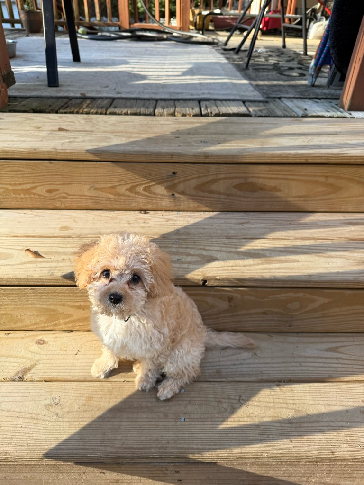

Buddy (name)
Means
Look into my eyes.
Your practice
Say his name once; reward eye contact.

Crowned K9s · Service Dog Prospect
Your practical guide to potty success, calm independence, clear communication, and a confident first week at home.
Toy Cavapoo · Service dog prospect · Private family playbook

Lead with Confidence, Train with Crowned K9s.
Know your pup
A reliable potty routine and learning that he can relax even when people are busy are the two habits that will set him up for long-term success. Your consistency in the first week matters more than perfection.
Potty training
At his designated potty area, say Hurry Up once, allow him to focus, and celebrate as soon as he finishes with Yes, praise, and a high-value reward. Keep the trip quiet and boring until he goes; play and freedom can follow.
Take Buddy outside immediately after waking, after eating, after drinking, and after playing.
Also take him out before bedtime, after crate time, and frequently during the day even if none of these triggers has occurred.
Night & meals
Buddy is very small, and his bladder capacity is limited. During training, accidents or urgent potty needs became more likely around 3½–4 hours. His longest observed overnight stretch was approximately 2 AM to 6 AM; this is an observation, not a guaranteed schedule.
Keep overnight trips calm: carry or leash Buddy directly to the potty spot, say Hurry Up, reward after he finishes, and return to the crate. Do not punish accidents. Clean indoor accidents with an enzymatic cleaner.
Aim to finish dinner early enough to allow a potty trip before bed; 7:30 PM can be a useful household target. Track when Buddy drinks and offer an extra potty trip afterward. Do not withhold daytime water or impose a rigid water cutoff on a young puppy. Fresh water should be available, particularly after activity or in warm weather. Ask his veterinarian about any nighttime water-management plan if accidents persist.
Daily rhythm
| When | Buddy's routine |
|---|---|
| Immediately after waking | Outside → Hurry Up → Yes + reward |
| After breakfast / water | Potty trip; short training; supervised play |
| After play or naps | Potty trip; then quiet crate rest |
| Throughout the day | Frequent potty breaks, especially after each trigger |
| Dinner / evening | Meal, potty, calm play, potty before bed |
| Night | Crate beside bed; planned breaks and respond to signals |
Communication
Yes marks the correct choice and predicts a reward.
Good tells Buddy to keep doing the behavior.
Break releases him from the behavior.
Example: ask for Sit → mark Yes and reward → say Good as he holds the position → say Break when finished.
What he knows
Duration behaviors end with Break when you are finished holding the position.
Means
Look into my eyes.
Your practice
Say his name once; reward eye contact.
Means
Move toward you.
Your practice
Practice cheerful, easy recalls and reward generously.
Means
Bottom on the floor.
Your practice
Ask for a Sit at every doorway when entering or exiting, and reward calm waiting.
Means
Go to his bed or mat and settle there until released.
Your practice
Use Place during meals, busy household moments, and whenever he needs an off switch.
Stay & practice
Means
Hold his position until Break.
Your practice
Build short duration first; gradually add distance and distractions.
Means
Familiar interruption / reminder cue.
Your practice
Use calmly, then help Buddy return to the requested behavior.
Put Buddy on his bed, ask for Stay, and begin with a short, achievable duration. Mark Good while he stays and release with Break.
He may bark or become wiggly; reward moments of calm rather than escalating the interaction. If he steps off, use the "CHT" sound, guide him back and simplify the next repetition.
I would advise to let him drag a leash around while he's having supervised free time to help with redirecting him or making sure he doesn't get into anything bad.
Independence
Buddy loves being involved. When people are busy and he is not receiving attention, he may screech or protest. This can be a normal puppy frustration response, but we want to teach him early that being alone and being bored are safe, ordinary parts of life.
A supervised tether near you can also teach settling. Attach his leash to an object that he cant move, and let him learn how to be bored. Ignore him the whole time until he decides to fall asleep and stop barking.
Welcome home
Welcome home, Buddy! He has an excellent start. Consistency, patience, and a predictable routine will help his new family preserve his training while he grows.
Lead with Confidence, Train with Crowned K9s.
Text: 919-816-2426 · lorenzo@crownedk9s.com · crownedk9s.com